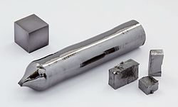

Название, символ, номер Танта́л / Tantalum (Ta), 73
Атомная масса
(молярная масса) 180,94788(2) а. е. м. (г/моль)
Электронная конфигурация [Xe] 4f14 5d3 6s2
Электроны по оболочкам 2, 8, 18, 32, 11, 2
Радиус атома 149 пм
Химические свойства
Ковалентный радиус 134 пм
Радиус иона (+5e) 68 пм
Электроотрицательность 1,5 (шкала Полинга)
Электродный потенциал −1,12
Степени окисления 5
Энергия ионизации
(первый электрон) 760,1 (7,88) кДж/моль (эВ)
Термодинамические свойства простого вещества
Плотность (при н. у.) 16,65 г/см³
Температура плавления 3290 K (3017 °C)
Температура кипения 5731 K (5458 °C)
Уд. теплота плавления 24,7 кДж/моль
Уд. теплота испарения 758 кДж/моль
Молярная теплоёмкость 25,39 Дж/(K·моль)
Молярный объём 10,9 см³/моль
Кристаллическая решётка простого вещества
Структура решётки кубическая
объёмноцентрированая
Параметры решётки 3,310 Å
Температура Дебая 225,00 K
Прочие характеристики
Теплопроводность (300 K) 57,5 Вт/(м·К)